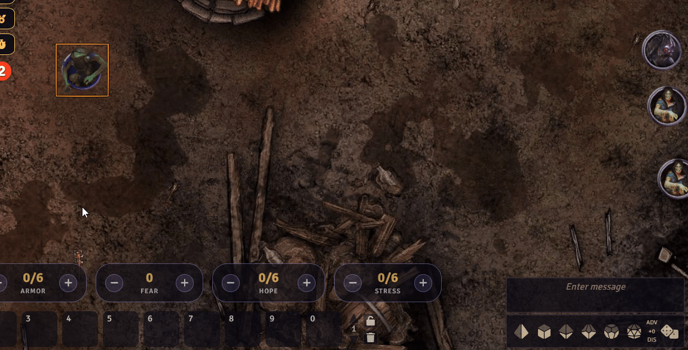
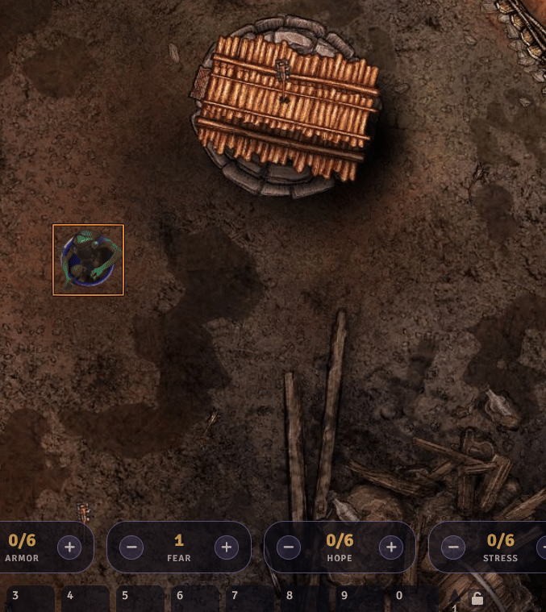

Hope, Fear & Stress
What it is¶
Hope helps players, Fear helps the GM, Stress marks strain. Rolls automatically adjust these values when appropriate.
Getting started¶
- Roll using Duality; outcomes apply resources automatically
- Adjust manually with the Token Counter UI
- Use resource buttons in chat or text via Resource Enrichment
Automatic from rolls¶
- Critical: +1 Hope and clear 1 Stress (characters)
- Hope: +1 Hope (characters)
- Fear: GM gains 1 Fear
Examples¶


Manual controls¶
- Use the Token Counter UI on the selected token
- Click resource buttons in chat or item text (see Resource Enrichment)
Rest results in chat¶
Long Rest selections post clear summaries to chat, including healing, stress clearing, armor repair, and preparation results.
Short Rest selections show the chosen options and the applied amounts for healing, stress clearing, and armor repair.
Tips¶
- Hope and Stress are per-character; Fear is a GM/party-level resource
- Some critical outcomes clear Stress automatically
- Coordinate Fear adjustments with the GM to avoid duplicates
Related¶
For power users¶
await spendHope(actor, 1);
await gainFear(1);
await clearStress(actor, 1);